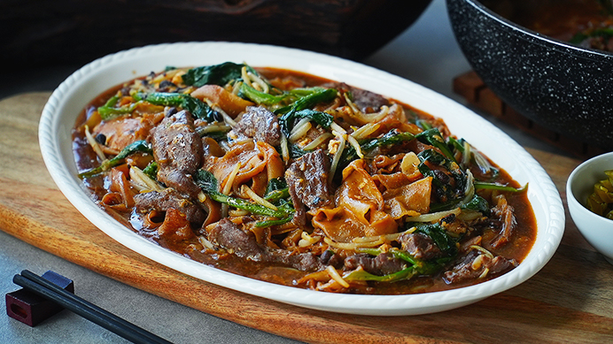

Beef Hor Fun

Description
Classic 'zichar' dish for you to whip up in the comfort of your own home! Simple and delicious.
Ingredients
- 500g Beef flank slices
- 1 tbsp Light soy sauce
- 2 tbsp Shaoxing wine
- 2 tbsp Cornstarch solution
- 300g Hor fun
- 600ml Chicken stock
- 1 Egg (beaten)
Steps
- Marinate beef slices with soy sauce, egg, shaoxing wine & corn starch solution, and massage mixtures until well absorbed. Chill for 30 minutes.
- Pour in soy sauce & dark soy sauce onto the hor fun directly. Use your hand to mix well gently to prevent breakage and get ready to pan fry the hor fun.
- In a pan with some oil, pan fry the hor fun until charred, set aside. Toss a handful of bean sprouts, quick toss and set aside.
- In the same pan, quickly shallow fry the beef slices until half 70% cooked, dish up and set aside.
- n the pan, stir fry the garlic until fragrant, add in black beans and continue to stir fry until fragrant.
- Pour gravy over hor fun & serve hot!